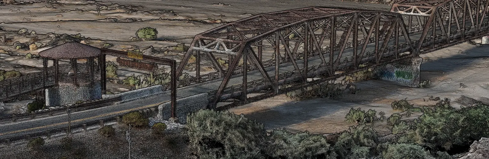

Metro Phoenix, Arizona
Clear insight. Stronger spatial intelligence.
Axis Fields is a geospatial intelligence company based in Metro Phoenix, Arizona. We collect site data, process it into measurable, defensible spatial information, and deliver it to engineers, agencies and asset owners who build decisions on it.
Who we work for
- CONSTRUCTIONProgress documentation, earthwork quantities, as-built support and site records for developers, contractors and design teams.
- INFRASTRUCTUREBridges, corridors, utilities and vertical assets. Condition documentation and equipment inventory without shutting a site down.
- PUBLIC AGENCIESMunicipal facilities, parks, heritage structures and pre-incident intelligence, delivered into the GIS systems you already run.

Why the chain matters
A model that is georeferenced is not the same as a model that is accurate. Software will happily grade its own homework, and a sensor's datasheet number is a relative specification, not a result you achieved on site.
So we hold points out of the solve, measure what the reconstruction got wrong at locations it never saw, and report that figure. It is the only accuracy number that means anything, and it is the one you can defend three years later when someone downstream is treating your layer as the truth.
Fourteen years in GIS, including work under licensed surveyors at Maricopa County. FAA Part 107 remote pilot.
Two tiers, and the difference is structural
Pick the one that matches the decision you are making.
The tiers are separated by equipment and workflow, not by wording on an invoice. We will tell you which one your project needs, including when the answer is the cheaper one.
TIER 1 · MEASURABLE
Verified Capture
RTK or PPK corrected, anchored to ground control, graded against withheld check points. Centimeter-level, measurable, defensible geometry with a written provenance record.
For engineering, construction verification, infrastructure documentation, historic and heritage recording, volumetrics, and anything a third party will measure from.
TIER 2 · VISUAL
Visual Capture
High-quality RGB imagery, video and walkthroughs. No correction state, no control, and no measurement claim of any kind. Around half the cost, and honest about what it is.
For marketing, listings, progress documentation for internal use, site familiarisation and social content.
How an engagement runs
Five steps, and you see the record at the end of each one.
- 01 SCOPEA short call to establish what decision the data has to support, and whether anything will be measured from it. That answer sets the tier, and it is the difference between a quote that holds and one that moves.
- 02 PLANAircraft, ground sample distance, and a written control plan: where control goes, which points are withheld as checks, and what will not be captured. Airspace authorization and site access coordination happen here, not on the morning of the flight.
- 03 CAPTUREBase station occupied and logging for the duration. Control and check points measured. One person owns the mission, so the collection is repeatable rather than merely successful.
- 04 VERIFYReconstruction, then residuals measured at the withheld points the model never saw. Where a second independent solution is warranted, PPK is run separately so there are two answers to compare.
- 05 DELIVERProducts in the formats your systems already read, with the control report, correction state, reference frame and epoch, and a written statement of what was not assessed.
- TURNAROUNDA reviewable digital twin lands 24 to 48 hours after the flight. The finished model and data package follows within two to four days. Larger sites carrying heavier processing loads run longer, and additional processing capacity is brought in when a job warrants it. Dates are confirmed against your actual site before you commit to anything.
Based in Metro Phoenix, Arizona. Travel outside the region by arrangement. Operations conducted under 14 CFR Part 107 by a certificated remote pilot in command.
How we operate
Three rules we do not bend.
- PROVE ITEvery measurement we hand you traces to a source you can inspect. We do not move a specification off a datasheet and let it read as a result.
- SAY WHAT IS MISSINGWhat was not captured is declared in writing, before you ask. A model that stays silent about its gaps will be assumed complete, and that assumption is where bad decisions start.
- RIGHT TIER, NOT THE BIGGESTWe will tell you when the cheaper option is the correct one. Selling measurable geometry to somebody who needed a photograph is a way to lose a client, not keep one.
Recent work
A 1927 steel truss bridge, and a retail development mid-build.
Two Arizona sites with nothing in common but the discipline applied to them. One needed close-range detail on hundred-year-old connections. The other needed geometry that matched a recorded plat. Both were flown to control that somebody occupied.
How the work is recorded
Every reported value carries a source tag.
Deliverables state where each figure came from, so nobody downstream has to guess which numbers were measured and which were repeated from somebody else.
- MEASUREDCollected by us, with the instrument, correction state and date recorded.
- OBSERVEDSeen and confirmed on site, but not instrumented.
- REPORTEDSupplied by the client, a public record, or a third party, and attributed to that source.
- NOT ASSESSEDExplicitly declared as outside what was captured. Silence is the dangerous answer, so we do not leave gaps unmarked.
A model that does not say what it left out will be assumed to be complete. That assumption is how careless data ends up carrying decisions it was never built to carry.
Tell us what decision the data has to support.
That single answer determines the tier, the control plan, the aircraft and the price. Start there rather than with a flight, and the quote will be right the first time.